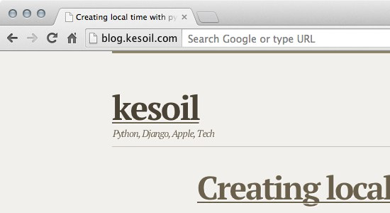
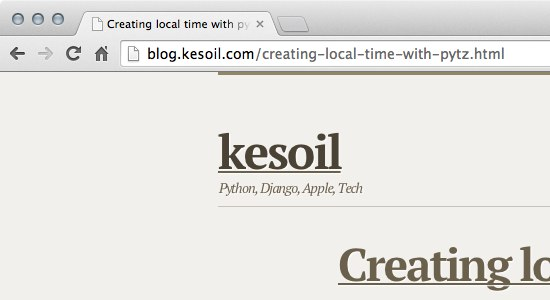

My Xbox 360 controller didn't work after installing Yosemite. Looks like there is a new 360controller-driver that works beautifully.
My Xbox 360 controller didn't work after installing Yosemite. Looks like there is a new 360controller-driver that works beautifully.
So Google has decided to mess with every user and especially web developer by hiding the full URL in the address bar.
For those like me who would like to disable the "experiment" type the following address to the URL bar, press enter, choose disabled and relaunch Chrome.
chrome://flags/#origin-chip-in-omnibox
The feature is called Origin Chip. Here is what it looks like:

Compare that to an image with the Origin Chip disabled:

More info in Allen Pikes Blog. Discussion in Hacker News.
I tried to create a datetime in a specific timezone like this:
import datetime
import pytz
eet = pytz.timezone('Europe/Helsinki')
local_month_start = datetime.datetime(2014, 3, 1, 0, 0, 0, tzinfo=eet)
# REPL output:
# >>> local_month_start.tzinfo
# <DstTzInfo 'Europe/Helsinki' HMT+1:40:00 STD>
# >>> local_month_start.astimezone(pytz.UTC)
# datetime.datetime(2014, 2, 28, 22, 20, tzinfo=<UTC>)
The what now? Correct UTC offset is exactly 2 hours, not 1:40.
This blog post titled "Relativity of time – shortcomings in Python datetime, and workaround" from 2008(!) sheds some light on the subject.
Ofcourse I should have read the pytz docs first because they say:
This library only supports two ways of building a localized time. The first is to use the localize() method provided by the pytz library. This is used to localize a naive datetime (datetime with no timezone information)
Unfortunately using the tzinfo argument of the standard datetime constructors ‘’does not work’’ with pytz for many timezones.
So one way of getting the desired result is like this:
import datetime
import pytz
eet = pytz.timezone('Europe/Helsinki')
local_month_start = eet.localize(datetime.datetime(2014, 3, 1, 0, 0, 0))
# REPL output:
# >>> local_month_start.tzinfo
# <DstTzInfo 'Europe/Helsinki' EET+2:00:00 STD>
# >>> local_month_start.astimezone(pytz.UTC)
# datetime.datetime(2014, 2, 28, 22, 0, tzinfo=<UTC>)
:D
This holiday I've been mostly watching Rich Hickeys presentations.
I highly recommend watching them. At least Are we there Yet?, Simple made easy and The Value of Values. They are real eye openers.